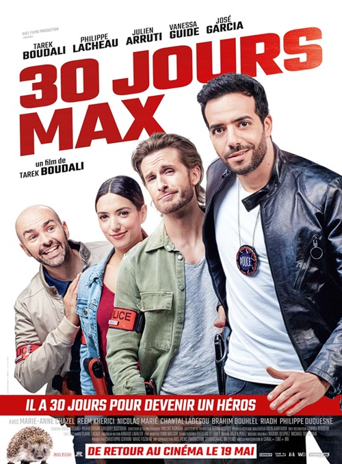
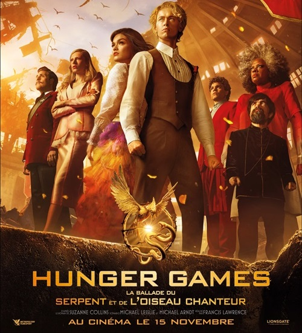
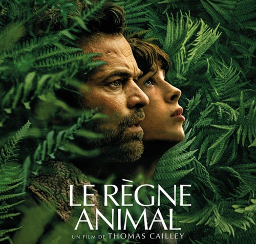
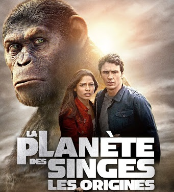
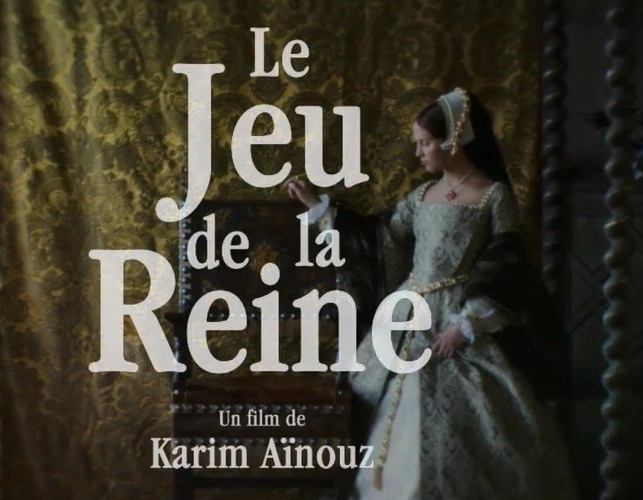
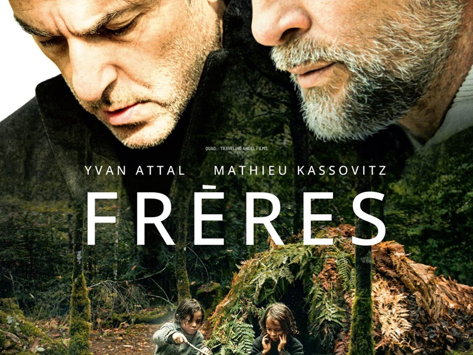

Majestic Ciné offre une expérience cinématographique unique.
Qui sommes nous
Majestic Ciné est une entreprise dédiée à offrir des expériences cinématographiques inoubliables à ses clients. Avec un éventail de salles de projection à la pointe de la technologie, nous nous engageons à projeter les derniers films dans des conditions optimales de son et d’image. Que ce soit pour des blockbusters, des films indépendants, ou des classiques, Majestic Ciné offre un lieu où le cinéma prend vie de manière immersive et captivante.
Nous croyons fermement que le cinéma est un art qui transcende les générations, et c’est pourquoi nous avons conçu nos salles pour répondre aux attentes de tous types de spectateurs. Avec un confort haut de gamme, des sièges ergonomiques, et des services personnalisés, chaque visite chez Majestic Ciné se transforme en une expérience luxueuse et mémorable. Notre équipe de professionnels est dédiée à garantir un service de qualité irréprochable à chaque séance.
En plus de notre offre de projections classiques, Majestic Ciné propose des événements spéciaux, des projections privées, et des avant-premières exclusives. Nous collaborons également avec des festivals de cinéma et des associations locales pour promouvoir la culture cinématographique. Notre objectif est de créer un espace communautaire où les amoureux du septième art peuvent se réunir et célébrer leur passion commune.
La prémière colonne contient le titre du film.
La deuxième colonne contient la date de sortie du film.
La troisième colonne contient le rang dans le classement des films du momoent.
La quatrième colonne contient les bandes annonces vidéos.
| Titre | Date de sortie | Rang | Bande annonce |
|---|---|---|---|
|
ALIENOID L'AFFRONTEMENT Lorsque les aliens ont envahi la terre ; Ean, jeune protectrice, s’est rendue dans le passé pour tenter d’inverser le cours de l’histoire. Aidée d’Initiés aux pouvoirs légendaires, la jeune femme doit désormais retourner à notre époque pour affronter l’Alien Originel lors d’une ultime bataille décisive pour sauver l’humanité. |
15-09-2024 | 1er |
|
|
BEETLEJUICE Après une tragédie familiale, trois générations de la famille Deetz rentrent chez elles à Winter River. Toujours hantée par Beetlejuice, la vie de Lydia est bouleversée lorsque sa fille adolescente, Astrid, ouvre accidentellement le portail vers l'au-delà. |
16-09-2024 | 2e |
|
|
L’I.A. DU MAL Curtis et sa famille sont sélectionnés pour tester un nouvel appareil révolutionnaire : un assistant familial numérique appelé AIA. Rapidement le robot apprend les comportements de la famille et commence à anticiper leurs besoins. Il souhaite s'assurer que rien - ni personne - ne se met en travers du chemin de la famille. |
22-09-2024 | 3e |
|
|
CITY OF DARKNESS Dans les années 80, le seul endroit de Hong Kong où la Loi Britannique ne s’appliquait pas était la redoutable Citadelle de Kowloon, une enclave livrée aux gangs et trafics en tous genres. Fuyant le puissant boss des Triades Mr. Big, le migrant clandestin Chan Lok-kwun se réfugie à Kowloon où il est pris sous la protection de Cyclone, chef de la Citadelle. Avec les autres proscrits de son clan, ils devront faire face à l'invasion du gang de Mr. Big et protéger le refuge qu'est devenue pour eux la cité fortifiée. |
12-09-2024 | 4e |
|
|
LES ROIS DU RALLYE Gi, un jeune pilote, fait le pari qu’il pourra battre le champion en titre, le machiavélique Archie Vaingloriol, à la plus grande course de rallye. Avec l'aide d'un ancien pilote devenu mécanicien, il devra affronter les pièges de ses adversaires et gagner la course pour sauver son village. |
11-09-2024 | 5e |
|
LES FILMS À NE PAS MANQUER EN VOD
-
30 jours max
Rayane est un jeune flic trouillard et maladroit sans cesse moqué par les autres policiers. Le jour où son médecin lui apprend à tort qu’il n’a plus que trente jours à vivre, Il comprend que c’est sa dernière chance pour devenir un héros au sein de son commissariat et impressionner sa collègue Stéphanie.
-
Hunger Games
Le jeune Coriolanus est le dernier espoir de sa lignée, la famille Snow autrefois riche et fière est aujourd’hui tombée en disgrâce dans un Capitole d'après-guerre. À l’approche des 10ème HUNGER GAMES, il est assigné à contrecœur à être le mentor de Lucy Gray Baird, une tribut originaire du District 12.
-
Le Règne animal
Dans un monde frappé par une vague de mutations qui transforment peu à peu certains humains en animaux, François met tout en oeuvre pour sauver sa femme atteinte de cette mystérieuse maladie. Alors que certaines créatures disparaissent dans une forêt voisine, il se lance avec Émile, leur fils de 16 ans, dans une quête qui changera leur vie à jamais.
-
La planète des singes
Dans un laboratoire, des scientifiques expérimentent un traitement sur des singes pour vaincre la maladie d'Alzheimer. Mais leurs essais ont des effets secondaires inattendus: ils découvrent que la substance utilisée permet d'augmenter radicalement l'activité cérébrale de leurs sujets. César est alors le premier jeune chimpanzé faisant preuve d'une intelligence remarquable.
-
Le jeu de la Reine
Catherine Parr est la sixième femme du roi Henri VIII, dont les précédentes épouses ont été soit répudiées, soit décapitées (une seule étant décédée suite à une maladie). Avec l’aide de ses dames de compagnie, elle tente de déjouer les pièges que lui tendent l’évêque, la cour et le roi…
-
Frères
LInspiré d'une histoire vraie, le film "Frères" raconte la vie de deux enfants qui ont vécu seuls pendant sept ans, sans contact avec la civilisation, dans la forêt.
Après Baby Phone (2017), une comédie légère, le réalisateur Olivier Casas signe un second long-métrage sous le signe du drame. Frères, inspiré d'une histoire vraie, revient sur l'incroyable destin de deux frères marqués par un séjour de plusieurs années dans la forêt quand ils étaient enfants.
Aller en haut de la page